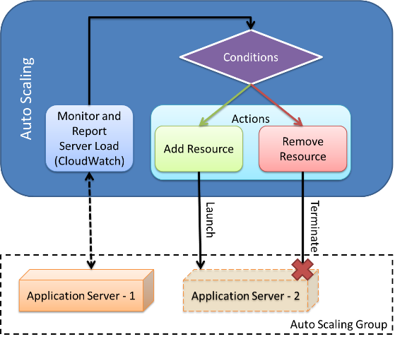
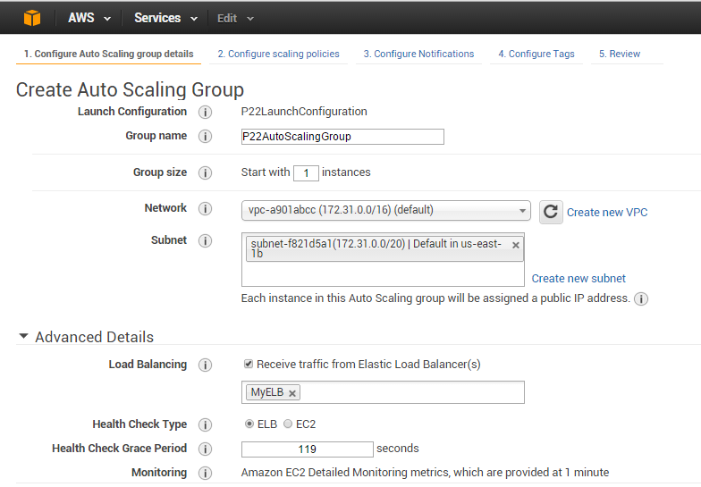
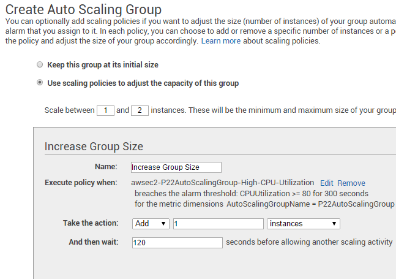
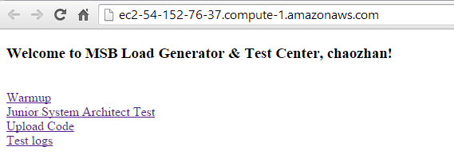
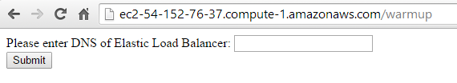
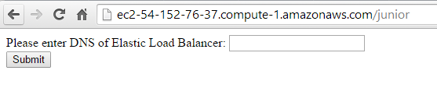
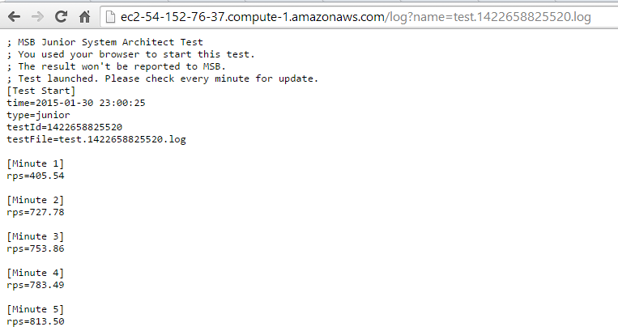
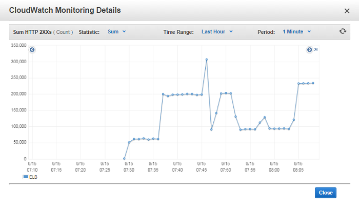
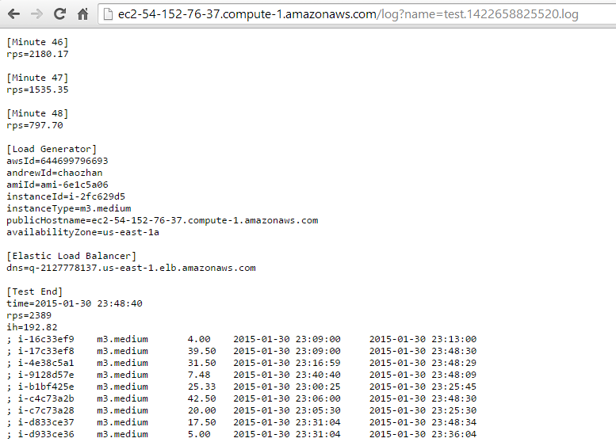

Load Balancing and Auto Scaling
Learning Objectives
This project will encompass the following learning objectives:
- Configure and deploy an Elastic Load Balancer along with Auto Scaling Group on AWS
- Develop programs that manage cloud resources, while dealing with resource failures
Resource Tagging And Project AMIs
For this project, assign the tag with Key: Project and Value: 2.2 for all resources
For this project, the AMI IDs are Load Generator (LG): ami-ae0a46c6 and Data Center Instance (DCI): ami-7c0a4614
For this project, use only m3.medium instance for Load Generator (LG) or your test result will be invalid.
Congratulations on joining the Massive Surveillance Bureau. Your mission, should you choose to accept it, is to design a scalable data center to handle requests from the agents in a timely manner.
Elastic Load Balancer
You have already been introduced to the Elastic Load Balancer, which acts as a network router that sends incoming requests to multiple EC2 instances sitting behind it in a round-robin fashion. Round-robin scheduling is not perfect, but it does an adequate job given a large number of users, each with relatively simple requests. The instances it points to can be added manually through the web console, programmatically through an API, or dynamically with an Auto Scaling Group. It also does a Health Check to see if the host is alive (if not, it will stop sending requests to it). Using an ELB costs $0.025 per hour + $0.008 per GB transferred through it.
Last week, you were introduced to the ELB, but not the APIs. Apart from the web console, you can programmatically interact with an Elastic Load Balancer in many ways, including:
We will give you more information about working with these APIs after introducing the next section on Auto Scaling.
Amazon Auto Scaling
Amazon's Auto Scaling service automatically adds or removes computing resources allocated to an application, by responding to changes in demand. AWS Auto Scaling refers to horizontal scaling, which is the act of increasing or decreasing the compute capacity of an application by changing the number of servers assigned to it. This is in contrast to vertical scaling, which is achieved by changing the size of individual servers in response to demand (such as changing m1.small to m1.large), and is currently not supported by AWS Auto Scaling. Amazon Auto Scaling can be accessed through command-line tools or through APIs in the SDK. The following video explains AutoScaling:
Video: Auto Scaling
Amazon's Auto Scaling provides the following deployment modes on a group of EC2 instances:
- Maintain a fixed number of running EC2 instances at all times, by performing periodic health checks on instances and automatically launching new instances when one or more are unhealthy;
- Scale instances by invoking Auto Scaling manually, which will increase or decrease the number of running instances on your behalf;
- Predictable scaling based on a developer-specified schedule (for example, a condition you could specify to decrease the servers every Friday at 5 p.m. and to increase them every Monday at 8 a.m);
- Dynamically scale based on conditions specified by the developer (for example, CPU utilization of your EC2 instances).
Using Elastic Load Balancing and Auto Scaling
A use case for Auto Scaling is dynamic infrastructure management. In the case of MSB, it should be clear how Auto Scaling can help deal with variable traffic patterns. As the traffic increases and the load on the servers increases, the number of servers can be increased dynamically. Similarly, as the traffic decreases and the load on the servers decreases, the number of servers can be decreased dynamically. In that sense, we can program Auto Scaling to respond to changes in CPU load (or other metrics) of provisioned servers.
Auto Scaling Architecture in Amazon EC2
AWS Auto Scaling Internals
Using Amazon's Auto Scaling in a dynamic fashion requires, at minimum, the following:
- An Auto Scaling group should be defined with minimum, maximum and desired number of instances defined during the group creation. More information can be found here on creating auto scaling groups.
- A Launch Configuration template should be defined, which includes the AMI ID, instance types, key pairs and security group information, among others. As Auto Scaling is meant to scale automatically based on application demands; i.e. the instance should be configured to automatically start the required application services and work seamlessly on launch.
- An Auto Scaling policy should be created, which defines the set of actions to perform when an event, such as a CloudWatch alarm, is triggered.
The following video will demonstrate how you can use Auto Scaling:
Video: Auto Scaling Demo
A Day at the MSB with Auto Scaling
MSB Junior System Architect Test
In Project 2.2 you get to experience one day in the life of a MSB junior system architect. As a junior system architect, you must ensure that the Data Center is responding reliably and efficiently to requests from the field agents for 24 hours a day.
A Note on Time Warping
Unfortunately we do not have the budget (and most of you do not have the time) to conduct 24-hour long tests. So, for the rest of this module, you can assume that 1 hour of MSB time in the write-up corresponds to 2 minutes of real time. Thus the 24-hour test takes only 48 minutes of your time.
System architects earn a salary relative to a day's performance. The minimum requirement is that the mean requests per second for the entire 24 hours of traffic is over 2400 rps (this corresponds to the mean rps of the 48-minute test). During a typical day, there is one morning peak and one evening peak. During both rush hours, MSB receives a huge number of requests to track person(requests to the /track/person page of Data Center). Unfortunately, system architects have a daily limit of 200 instance-hours.
A Note on Instance-Hours
The instance-hour is the unit of cost when one m1.small instance is billed for a period of one hour. One m1.medium/m3.medium instance running for one hour corresponds to 2 instance-hour, while one m1.large/m3.large instance(m1.large/m3.large) running for one hour corresponds to 4 instance-hour. For the purpose of our tests, time-warping makes 1 hour of MSB time correspond to 2 minutes of real time.
For example, if you have two m1.medium instances running for the entire 48 minute test, that corresponds to 2 instances * 24 hours * 2 instance-hour per medium instance per hour = 96 instance-hours.
If you have three m3.large instances that are launched together for 6 minutes in real time, you will be charged for 3 instances * 3 hours * 4 instance-hour per large instance per hour = 36 instance-hours.
For each instance-hour used beyond the limit, a small amount is deducted from your salary. Thus, to maximize your earnings, the system should use the bare minimum number of instances required for most of the day, quickly scale up to handle the spikes as they occur, and then scale down as soon as the spikes have ended. You can visualize your instance-hours using the "Healthy Hosts" graph in the ELB page.
You should use an ELB to divide traffic evenly between your instances. Using Auto Scaling and CloudWatch, you can scale your system to handle the traffic. In the section Putting it all together, we give you an example of Auto Scaling rules, but you should feel free to devise your own rules to meet the target.
Fault Tolerance
Since you are no longer able to afford the best and the fastest equipment, your Data Center instances have become unstable - they tend to crash regularly. The Load Balancer will continue to send traffic to these buggy servers until they are no longer marked as healthy. You need to ensure that most of these requests are not lost by setting up the ELB to detect and respond to failure. You should also be able to pinpoint exactly when each of your Data Center's instances failed.
Putting it all together
To become a qualified MSB junior system architect, you are required to write a program, using either the Java, Python(boto) or CLI API, to do the following set of steps. You may also choose to use the AWS Web Console to do this for dry runs. But in order to report the test result to MSB, you need to upload code for at least one test.
Initially for testing, you may ignore setting up CloudWatch alarms and an AutoScaling Group (Steps 2-6 could be replaced by attaching a fixed number of instances in Auto Scaling Group to the Elastic Load Balancer) to have a sense of the traffic pattern. Once you have analyzed the traffic pattern using a fixed set of instances, you could continue with the full set of steps below:
- Create a Security Group to allow ALL requests on ALL ports from ANYWHERE and allow all outgoing requests on all ports to anywhere. This should later be associated with your Elastic Load Balancer and Auto Scaling Group.
-
Create an ELB that:
- Redirects HTTP:80 requests from the load balancer to HTTP:80 on the instance
- Set up the page /heartbeat as the health check page
-
Create a Launch Configuration for the instances that will become part of the Auto Scaling Group, with the following parameters:
- AMI ID: As described in Resource Tagging And Project AMIs.
- Instance Type: m1.small, m1.medium, m1.large, m3.medium or m3.large
- Detailed Monitoring: enabled
-
After analyzing the traffic pattern, figure out a good rule for Scale Out and Scale In operations. Below we define the following default rules to give you an idea of the various parameters that need to be set. Please note that you may find it difficult to achieve a passing grade using an Auto Scaling Group with the following parameters.
- Group Size Start With: 1 instance
- Subnet: Recommeded to choose the same availability zone(s) corresponding to your ELB
- Load Balancing: Receive traffic from Elastic Load Balancer and choose your ELB
- ELB Name: Choose your ELB name, make sure it’s alphanumeric
- Health Check Type: ELB
- Detailed Monitoring: enabled 
An example of Auto Scaling Group configuration
-
Create the following Auto Scale Policies: Please note that you may find it difficult to achieve a passing grade using an Auto Scaling Group with the following parameters.
- Minimum Instance Size: 1
- Maximum Instance Size: 2
- Create a ScaleOut policy that automatically adds 1 instance to the auto scaling group.
- Create a ScaleIn policy that automatically removes 1 instance from the auto scaling group. 
An example of Auto Scaling Group configuration
-
Create CloudWatch Alarms that invoke the appropriate policy for the following scenarios: Please note that you may find it difficult to achieve a passing grade using an Auto Scaling Group with the following parameters.
- Scale out when the group's CPU load exceeds 80% on average over a 5 minute interval.
- Scale in when the group's CPU load is below 20% on average over a 5 minute interval.
- Link the CloudWatch Alarms to the ScaleOut and ScaleIn rules of your Auto Scaling Group.
- Configure correct tags for your Auto Scaling Group.
- Create a Load Generator instance of size m3.medium using AMI described in Resource Tagging And Project AMIs

Main Page on Load Generator
- Before launching the test, you may wish to warm up your Load Balancer by visiting http://<load-generator-dns>/warmup?dns=<your-elb-dns> manually in your browser or sending a HTTP request to http://<load-generator-dns>/warmup?dns=<your-elb-dns> using your code. The Load Generator will send requests concurrently to /track/device for 5 minutes during each warm up. You may choose to do this step multiple times until you are satisfied that your ELB has warmed up. The instance-hours used in the warm up phase do not count towards your final grade.

Warmup Page on Load Generator
-
Once your ELB is warmed up, start the test by visiting the URL: http://<your-load-generator-dns>/junior and entering your ELB DNS.
Junior System Architect Test Page on Load Generator
Your code should request the following HTTP URL: http://<your-load-generator-dns>/junior?dns=<your-elb-dns>.
You can view the progress of this test using the page: http://<your-load-generator-instance-dns-name>/log?name=test.<testId>.log. A sample Junior System Architect test log
-
You can monitor your ELB using the web console:
Sum of 2XX Https of ELB in CloudWatch
The graph above is for HTTP 2xx requests (successful requests). There are other graphs for failed HTTP requests (non-2xx). If you are seeing a large number of non-2xx pages, it indicates that you have misconfigured your ELB or that you are not scaling fast enough to handle the spikes. -
At the end of the 48 minutes, you will be told your average rps for the entire test and your instance-hour summary.

A sample test result
-
Your code should terminate all resources except for the Load Generator
and the Load Balancer.
Performance targets and scoring
| Value | Target | Score |
|---|---|---|
| Instance Hour Limit | 200 | if (x < 200) { return 40; } else { return 40 - 0.25 * (x - 200); } |
| Requests Per Second | 2400 | x / 60 |
If you have achieved rps = 1800 with 150 instance-hours, your performance score will be 30 + 40 = 70.
If you have achieved rps = 2400 with 250 instance-hours, your performance score will be 40 + 27.5 = 67.5.
In addition, your code will be manually graded and its score is 20 at maximum.
The total score is 100, including 40 for rps, 40 for instance hour and 20 for code.
Tasks to Complete
- Manually launch the Load Generator with the correct AMI and instance type. You don't have to write code for this step.
- Write a program in Python, Java or shell script using the AWS APIs.
- You program should create correct Security Groups, launch a Elastic Load Balancer and initiate an Auto Scaling Group along with Launch Configuration, Auto Scale Polices and CloudWatch Alarms. Your program should wait for all resources to be ready.
-
Your program should warm up the ELB (0 or more times) and start the junior system architect test on the Load Generator. Your program should also record the testId in the response.
- Your program should wait for the test to complete, terminate all resources(Security Group, Elastic Load Balancer, Auto Scaling Group, Launch Configuration, Auto Scale Polices, CloudWatch Alarms) except the Load Generator.
-
Manually submit your program as
<testId>.zipincluding your source code(*.java, *.py or *.sh) ANDreferencesin http://<your-load-generator-instance-dns-name>/upload. Please note thatreferencesis compulsory. Please do not include any library (*.jar) or credential (*.pem,access_key.csv) files in your<testId>.zip. Your test will be graded only if you have uploaded code for that test. You don't have to write code for this step either. You will see a check mark in scoreboard. - Repeat steps 3-6 if you have budget left and hope to try with different parameters/policies.
- Do not forget to terminate your Load Generator. You don't have to write code for this step either.
Hints
- You may wish to perform several runs manually - one without Auto Scaling, the next with a set of Auto Scaling rules based on your observations of the static test, followed by a run with modified rules to perform well. Realize that CloudWatch provides very interesting metrics that you can use to correctly identify the load on the system. Try to match the CloudWatch metrics to the number of HTTP requests received by the ELB.
- Warming up ELB is tricky. Think about why Project 2.1 ELB Test lasts for 15 minutes long and how many times you run ELB Test to meet the required rps in Project 2.1.
- Scaling out is also tricky. Think about why we do not calculate the first minute in Project 2.1 Vertical Scaling Test. Find a way to mitigate the impact of adding new instances.
- The availability zone you choose may or may not have an impact on your test result.
- Do not launch multiple Load Generators at the same time. This will interfere with the calculation of instance hours.
- If your rps is nearly zero(0 < rps < 1), please check if there is at least one healthy instance connected to ELB. Please notice that your solution should be fault-tolerant.
- Think twice before starting test and burning your budget.
Additional Resources and References
Elastic Load Balancing Documentation
Project Grading Penalties
Besides the penalties mentioned in recitation and/or on Piazza, penalties accrue for the following:
| Violation | Penalty of the project grade |
|---|---|
| Spending more than $10 for this project phase | -10% |
| Spending more than $20 for this project phase | -100% |
| Failing to tag all your resources(EC2 instances, ELB, ASG) for this project | -10% |
| Submitting your AWS credentials in your code for grading | -10% |
| Using instances other than m1/m3.small/medium/large | -10% |